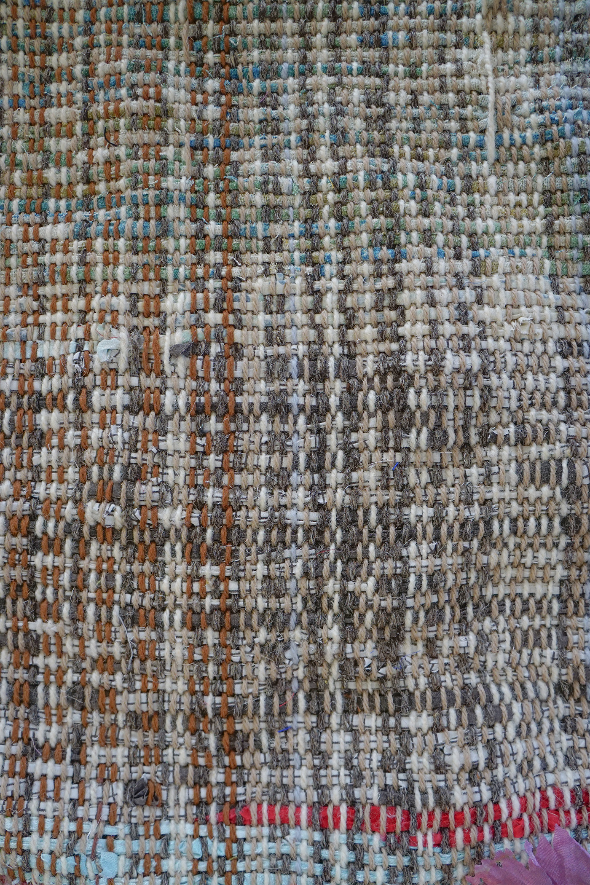

Sound Bank
Treatise::Meander
Sound is a touch through the medium. Textiles touch and are the medium.
Where the medium touches me, is a rosebud lip brushing mine,
is a bird song penetrating noiseful swamp.
On patterns and loops.
How related are a loop and repeating pattern? The cycle of treadle presses in
weaving requires my feet to do the same dance steps again and again, until
foot disobeys.
Extending the audio or MIDI in the DAW to create an endless chain of repeating sound.
The digital signal is sent again and again, in perfect memory recall. If I chain my
feet to the sound, will I be a perfect dancer?
"where grace is concerned,
it is impossible for man to come anywhere near a puppet. Only a god can equal inanimate matter
in this respect. This is the point where the two ends of the circular world meet."
Heinrich Von Kleist - "On the Marionette Theatre" (1810)
Puppet (2018)
NAUTILUS FREE LOSSY (2018)
But I stray. I am attracted to the rigid control of the loom and the nested clocks of
the Octatrack sampler. Through the heddles come threads comprising structures whose parts
are interchangeable. Into the sampler go audio recordings that each are a placeholder with
metadata. The slice and effect metadata of a sample as applied to a weaving pattern?
The treadling pattern of a weaving pattern transposed to MIDI data?
And where does freedom have its say? The yard upon yard of perfect repeated plaid that gets
sewn into countless identical shirts. The song on repeat that drives the imprisoned person
mad. Where in pristine memory can we quietly drill an escape route? Will or won't you follow
me there?
In the production of music and textiles the push-pull of controlled/free and mechanized/meditative come to the fore. The human's unlikely romance with the machine involves not compromise but a quiet battle:
"designed to leave space for the caprice of the human hand,"
"trust your ears, but give the final word to the meter."
Navigating this landscape, we come across arid regions and hot swamps.
Bound by digital standards fueled by visions of utopic perfection, she tunes her voice to perfect semitones, or
Quantizes perfectly to 4/4 step the notes she's played, then adds 3% swing just to make them a touch human.
However, now more is possible than ever in the confines of a small room.
She is not caged in, just more free to be alone.
Textile Library

Sample 0.0
Hand woven 100% Merino wool (Jaggerspun lace-weight 18/2), 5.5 yds, 2/2 twill. Woven Nov. 2019 - Nov. 2020.
I sought to create an organic plaid, whereby the color repetition is consistent (mirrored sequence of burgundy-red-sage-green-lavender-magenta)
but the thicknesses of the bands vary according to the weaver's intuition.
Notes
The elasticity of the wool warp caused the fabric to lengthen significantly beyond
the initial warp length of 6 yards. The warp was also subject to snapping, especially at the edges where there was heightened strain on the threads. Near the end, I felt constricted by the
color sequence and experimented with dropping colors or disrupting the sequence to create new variations of the fabric.
Specs: 12 EPI, approx. 52" wide, woven on Macomber jack loom


A test of how extreme the variations could appear on the same warp. The last 3 yards of warp I chose completely new weft yarns to create a textile with distinct character, whilst still sharing identical structure and warp (50% of the content) with the previous yardage.

Sample 0.1
Hand woven variety of yarns, including scrap fabric, 4.5 yards, plain weave. Woven June 2020.
I sought to weave without a sense of preciousness about the material. I used only donated yarns and scrap fabric, and concentrated on generating variegated cloth quickly that could be used as the ground
to a collaged textile "painting". The painting never came to fruition.
Notes
Thick strong warp allowed for greater speed and play, without fear of threads snapping. While the yardage itself became an all-over neutral, small samples taken from
the cloth allowed the variation in color to become more pronounced.
Specs: 8 EPI, approx. 30" wide, woven on Leclerc jack loom

I used excerpts of the yardage to create a limited edition run of 10 World Unfound USB sleeves. Hand-painted wooden USB drives tucked into sewn pockets on cloth mounted to painted cardboard. This one was sent to Iowa City for Anne.

Unclaimed sleeve.

For Lucky, sent to New York.

For Haumed, in Cleveland.

For Aloe, in Salt Lake City.

USBs out of their sleeves.